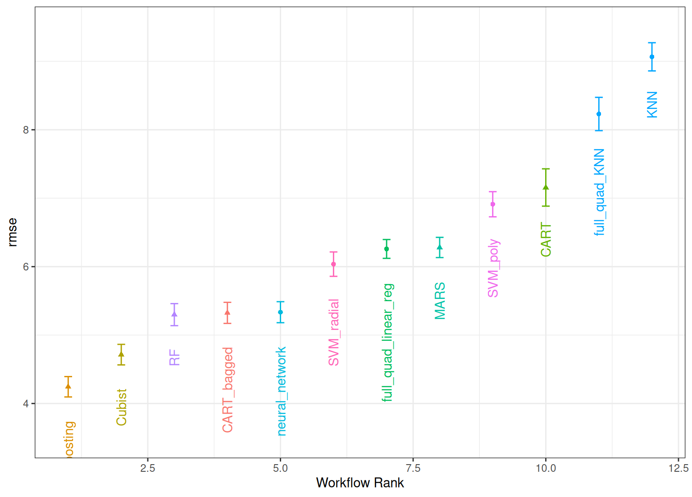
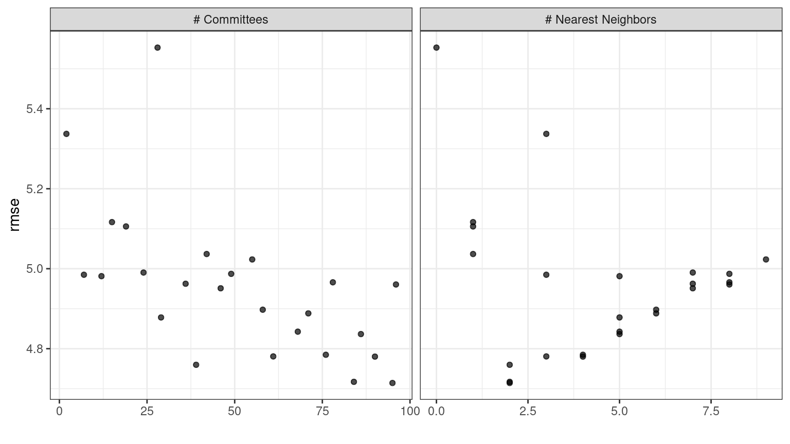
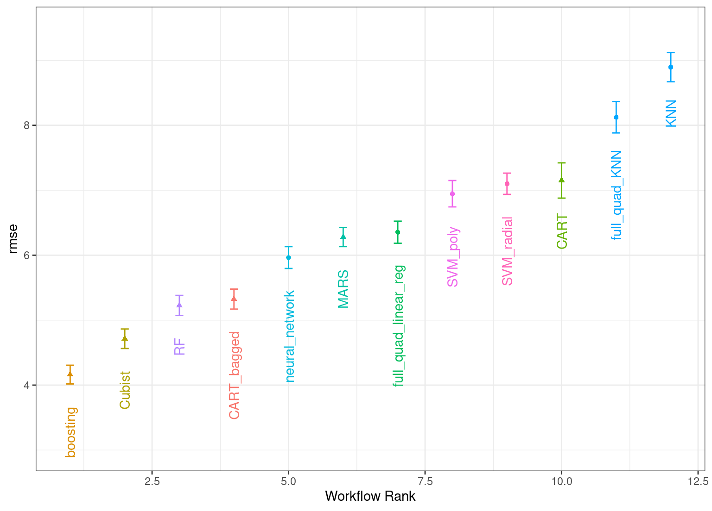
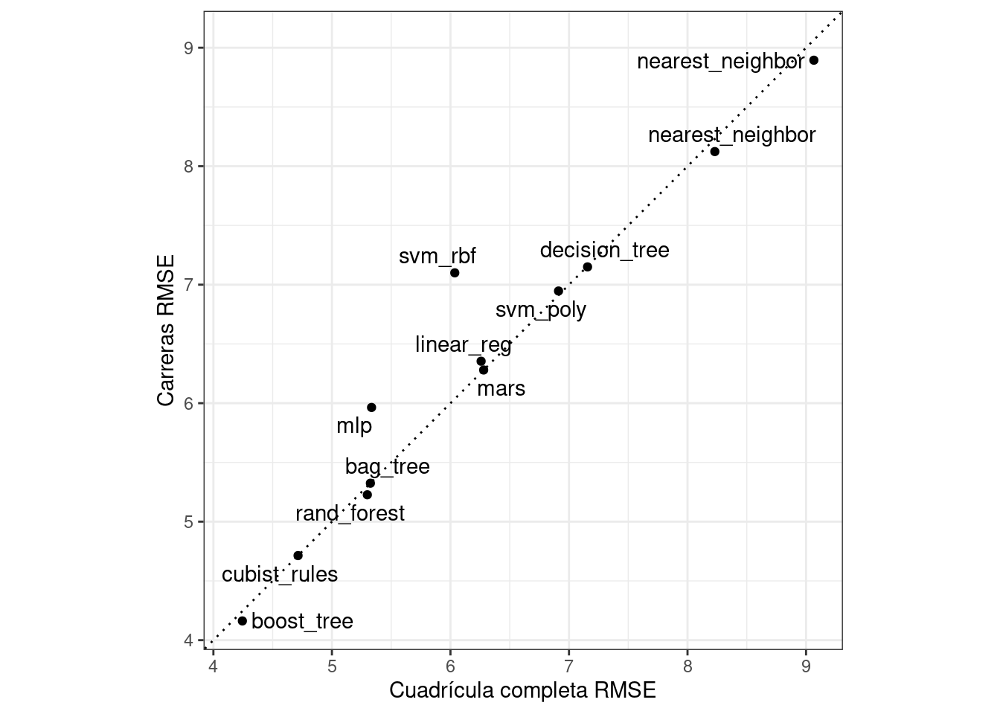
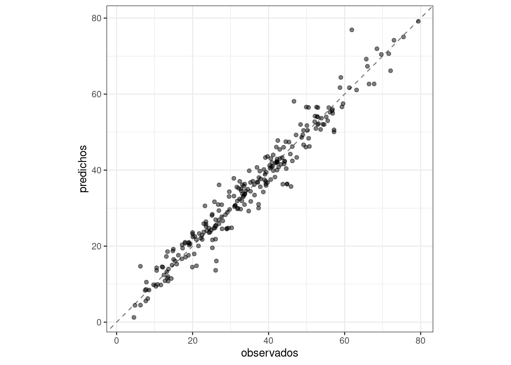

library(tidymodels)
tidymodels_prefer()
data(concrete, package = "modeldata")
glimpse(concrete)
## Rows: 1,030
## Columns: 9
## $ cement <dbl> 540.0, 540.0, 332.5, 332.5, 198.6, 266.0, 380.0, 380.…
## $ blast_furnace_slag <dbl> 0.0, 0.0, 142.5, 142.5, 132.4, 114.0, 95.0, 95.0, 114…
## $ fly_ash <dbl> 0, 0, 0, 0, 0, 0, 0, 0, 0, 0, 0, 0, 0, 0, 0, 0, 0, 0,…
## $ water <dbl> 162, 162, 228, 228, 192, 228, 228, 228, 228, 228, 192…
## $ superplasticizer <dbl> 2.5, 2.5, 0.0, 0.0, 0.0, 0.0, 0.0, 0.0, 0.0, 0.0, 0.0…
## $ coarse_aggregate <dbl> 1040.0, 1055.0, 932.0, 932.0, 978.4, 932.0, 932.0, 93…
## $ fine_aggregate <dbl> 676.0, 676.0, 594.0, 594.0, 825.5, 670.0, 594.0, 594.…
## $ age <int> 28, 28, 270, 365, 360, 90, 365, 28, 28, 28, 90, 28, 2…
## $ compressive_strength <dbl> 79.99, 61.89, 40.27, 41.05, 44.30, 47.03, 43.70, 36.4…15 Probando Muchos Modelos
Presentamos conjuntos de flujos de trabajo en el Capítulo 7 y demostramos cómo usarlos con conjuntos de datos remuestreados en el Capítulo 11. En este capítulo, analizamos estos conjuntos de múltiples flujos de trabajo de modelado con más detalle y describimos un caso de uso en el que pueden resultar útiles.
Para proyectos con nuevos conjuntos de datos que aún no se han comprendido bien, es posible que un profesional de datos necesite examinar muchas combinaciones de modelos y preprocesadores. Es común tener poco o ningún conocimiento a priori sobre qué método funcionará mejor con un conjunto de datos novedoso.
Una buena estrategia es dedicar un esfuerzo inicial a probar una variedad de enfoques de modelado, determinar qué funciona mejor y luego invertir tiempo adicional ajustando/optimizando un pequeño conjunto de modelos.
Los conjuntos de flujos de trabajo proporcionan una interfaz de usuario para crear y gestionar este proceso. También demostraremos cómo evaluar estos modelos de manera eficiente utilizando los métodos de carrera discutidos en Sección 15.4.
15.1 Modelado De La Resistencia De Una Mezcla De Hormigón
Para demostrar cómo filtrar múltiples flujos de trabajo de modelos, usaremos los datos de mezcla de concreto de Applied Predictive Modeling (Kuhn y Johnson 2013) como ejemplo. El capítulo 10 de ese libro demostró modelos para predecir la resistencia a la compresión de mezclas de concreto utilizando los ingredientes como predictores. Se evaluó una amplia variedad de modelos con diferentes conjuntos de predictores y necesidades de preprocesamiento. ¿Cómo pueden los conjuntos de flujos de trabajo facilitar este proceso de pruebas de modelos a gran escala?
Primero, definamos los esquemas de división y remuestreo de datos.
La columna compression_strength es el resultado. El predictor de “edad” nos dice la edad de la muestra de concreto en la prueba en días (el concreto se fortalece con el tiempo) y el resto de los predictores como “cemento” y “agua” son componentes de concreto en unidades de kilogramos por metro cúbico.
En algunos casos de este conjunto de datos, la misma fórmula concreta se probó varias veces. Preferimos no incluir estas mezclas replicadas como puntos de datos individuales, ya que podrían distribuirse tanto en el conjunto de entrenamiento como en el de prueba. Hacerlo podría inflar artificialmente nuestras estimaciones de desempeño.
Para abordar esto, utilizaremos la resistencia a la compresión media por mezcla de concreto para modelar:
Dividamos los datos usando la proporción predeterminada de 3:1 de entrenamiento a prueba y volvamos a muestrear el conjunto de entrenamiento usando cinco repeticiones de validación cruzada de 10 veces:
Algunos modelos (en particular, redes neuronales, KNN y máquinas de vectores de soporte) requieren predictores centrados y escalados, por lo que algunos flujos de trabajo de modelos requerirán recetas con estos pasos de preprocesamiento. Para otros modelos, una expansión del modelo de diseño de superficie de respuesta tradicional (es decir, interacciones cuadráticas y bidireccionales) es una buena idea. Para estos fines, creamos dos recetas:
normalized_rec <-
recipe(compressive_strength ~ ., data = concrete_train) %>%
step_normalize(all_predictors())
poly_recipe <-
normalized_rec %>%
step_poly(all_predictors()) %>%
step_interact(~ all_predictors():all_predictors())Para los modelos, utilizamos el complemento parsnip para crear un conjunto de especificaciones de modelo:
library(rules)
library(baguette)
linear_reg_spec <-
linear_reg(penalty = tune(), mixture = tune()) %>%
set_engine("glmnet")
nnet_spec <-
mlp(hidden_units = tune(), penalty = tune(), epochs = tune()) %>%
set_engine("nnet", MaxNWts = 2600) %>%
set_mode("regression")
mars_spec <-
mars(prod_degree = tune()) %>% #<- use GCV to choose terms
set_engine("earth") %>%
set_mode("regression")
svm_r_spec <-
svm_rbf(cost = tune(), rbf_sigma = tune()) %>%
set_engine("kernlab") %>%
set_mode("regression")
svm_p_spec <-
svm_poly(cost = tune(), degree = tune()) %>%
set_engine("kernlab") %>%
set_mode("regression")
knn_spec <-
nearest_neighbor(neighbors = tune(), dist_power = tune(), weight_func = tune()) %>%
set_engine("kknn") %>%
set_mode("regression")
cart_spec <-
decision_tree(cost_complexity = tune(), min_n = tune()) %>%
set_engine("rpart") %>%
set_mode("regression")
bag_cart_spec <-
bag_tree() %>%
set_engine("rpart", times = 50L) %>%
set_mode("regression")
rf_spec <-
rand_forest(mtry = tune(), min_n = tune(), trees = 1000) %>%
set_engine("ranger") %>%
set_mode("regression")
xgb_spec <-
boost_tree(tree_depth = tune(), learn_rate = tune(), loss_reduction = tune(),
min_n = tune(), sample_size = tune(), trees = tune()) %>%
set_engine("xgboost") %>%
set_mode("regression")
cubist_spec <-
cubist_rules(committees = tune(), neighbors = tune()) %>%
set_engine("Cubist") El análisis en Kuhn y Johnson (2013) especifica que la red neuronal debe tener hasta 27 unidades ocultas en la capa. La función extract_parameter_set_dials() extrae el conjunto de parámetros, que modificamos para tener el rango de parámetros correcto:
nnet_param <-
nnet_spec %>%
extract_parameter_set_dials() %>%
update(hidden_units = hidden_units(c(1, 27)))¿Cómo podemos hacer coincidir estos modelos con sus recetas, ajustarlos y luego evaluar su desempeño de manera eficiente? Un conjunto de flujo de trabajo ofrece una solución.
15.2 Crear El Conjunto De Flujo De Trabajo
Los conjuntos de flujos de trabajo toman listas con nombres de preprocesadores y especificaciones de modelos y las combinan en un objeto que contiene múltiples flujos de trabajo. Hay tres tipos posibles de preprocesadores:
- Una fórmula R estándar
- Un objeto de receta (antes de la estimación/preparación)
- Un selector estilo dplyr para elegir el resultado y los predictores.
Como primer ejemplo de conjunto de flujo de trabajo, combinemos la receta que solo estandariza los predictores con los modelos no lineales que requieren que los predictores estén en las mismas unidades:
normalized <-
workflow_set(
preproc = list(normalized = normalized_rec),
models = list(SVM_radial = svm_r_spec, SVM_poly = svm_p_spec,
KNN = knn_spec, neural_network = nnet_spec)
)
normalized
## # A workflow set/tibble: 4 × 4
## wflow_id info option result
## <chr> <list> <list> <list>
## 1 normalized_SVM_radial <tibble [1 × 4]> <opts[0]> <list [0]>
## 2 normalized_SVM_poly <tibble [1 × 4]> <opts[0]> <list [0]>
## 3 normalized_KNN <tibble [1 × 4]> <opts[0]> <list [0]>
## 4 normalized_neural_network <tibble [1 × 4]> <opts[0]> <list [0]>Dado que solo hay un preprocesador, esta función crea un conjunto de flujos de trabajo con este valor. Si el preprocesador contuviera más de una entrada, la función crearía todas las combinaciones de preprocesadores y modelos.
La columna wflow_id se crea automáticamente pero se puede modificar usando una llamada a mutate(). La columna info contiene un tibble con algunos identificadores y el objeto de flujo de trabajo. El flujo de trabajo se puede extraer:
normalized %>% extract_workflow(id = "normalized_KNN")
## ══ Workflow ═════════════════════════════════════════════════════════════════════════
## Preprocessor: Recipe
## Model: nearest_neighbor()
##
## ── Preprocessor ─────────────────────────────────────────────────────────────────────
## 1 Recipe Step
##
## • step_normalize()
##
## ── Model ────────────────────────────────────────────────────────────────────────────
## K-Nearest Neighbor Model Specification (regression)
##
## Main Arguments:
## neighbors = tune()
## weight_func = tune()
## dist_power = tune()
##
## Computational engine: kknnLa columna option es un marcador de posición para cualquier argumento que se utilice cuando evaluamos el flujo de trabajo. Por ejemplo, para agregar el objeto de parámetro de red neuronal:
normalized <-
normalized %>%
option_add(param_info = nnet_param, id = "normalized_neural_network")
normalized
## # A workflow set/tibble: 4 × 4
## wflow_id info option result
## <chr> <list> <list> <list>
## 1 normalized_SVM_radial <tibble [1 × 4]> <opts[0]> <list [0]>
## 2 normalized_SVM_poly <tibble [1 × 4]> <opts[0]> <list [0]>
## 3 normalized_KNN <tibble [1 × 4]> <opts[0]> <list [0]>
## 4 normalized_neural_network <tibble [1 × 4]> <opts[1]> <list [0]>Cuando se usa una función del paquete tune o finetune para ajustar (o volver a muestrear) el flujo de trabajo, se usará este argumento.
La columna result es un marcador de posición para la salida de las funciones de ajuste o remuestreo.
Para los otros modelos no lineales, creemos otro conjunto de flujo de trabajo que use selectores dplyr para el resultado y los predictores:
model_vars <-
workflow_variables(outcomes = compressive_strength,
predictors = everything())
no_pre_proc <-
workflow_set(
preproc = list(simple = model_vars),
models = list(MARS = mars_spec, CART = cart_spec, CART_bagged = bag_cart_spec,
RF = rf_spec, boosting = xgb_spec, Cubist = cubist_spec)
)
no_pre_proc
## # A workflow set/tibble: 6 × 4
## wflow_id info option result
## <chr> <list> <list> <list>
## 1 simple_MARS <tibble [1 × 4]> <opts[0]> <list [0]>
## 2 simple_CART <tibble [1 × 4]> <opts[0]> <list [0]>
## 3 simple_CART_bagged <tibble [1 × 4]> <opts[0]> <list [0]>
## 4 simple_RF <tibble [1 × 4]> <opts[0]> <list [0]>
## 5 simple_boosting <tibble [1 × 4]> <opts[0]> <list [0]>
## 6 simple_Cubist <tibble [1 × 4]> <opts[0]> <list [0]>Finalmente, ensamblamos el conjunto que utiliza términos no lineales e interacciones con los modelos apropiados:
Estos objetos son tibbles con la clase adicional workflow_set. La vinculación de filas no afecta el estado de los conjuntos y el resultado es en sí mismo un conjunto de flujo de trabajo:
all_workflows <-
bind_rows(no_pre_proc, normalized, with_features) %>%
# Haga que los ID del flujo de trabajo sean un poco más simples:
mutate(wflow_id = gsub("(simple_)|(normalized_)", "", wflow_id))
all_workflows
## # A workflow set/tibble: 12 × 4
## wflow_id info option result
## <chr> <list> <list> <list>
## 1 MARS <tibble [1 × 4]> <opts[0]> <list [0]>
## 2 CART <tibble [1 × 4]> <opts[0]> <list [0]>
## 3 CART_bagged <tibble [1 × 4]> <opts[0]> <list [0]>
## 4 RF <tibble [1 × 4]> <opts[0]> <list [0]>
## 5 boosting <tibble [1 × 4]> <opts[0]> <list [0]>
## 6 Cubist <tibble [1 × 4]> <opts[0]> <list [0]>
## # ℹ 6 more rows15.3 Ajuste Y Evaluación De Los Modelos
Casi todos los miembros de all_workflows contienen parámetros de ajuste. Para evaluar su rendimiento, podemos utilizar las funciones estándar de ajuste o remuestreo (por ejemplo, tune_grid(), etc.). La función workflow_map() aplicará la misma función a todos los flujos de trabajo del conjunto; el valor predeterminado es tune_grid().
Para este ejemplo, la búsqueda de cuadrícula se aplica a cada flujo de trabajo utilizando hasta 25 candidatos de parámetros diferentes. Hay un conjunto de opciones comunes para usar con cada ejecución de tune_grid(). Por ejemplo, en el siguiente código usaremos los mismos objetos de remuestreo y control para cada flujo de trabajo, junto con un tamaño de cuadrícula de 25. La función workflow_map() tiene un argumento adicional llamado seed, que se usa para garantizar que cada ejecución de tune_grid() consume los mismos números aleatorios.
grid_ctrl <-
control_grid(
save_pred = TRUE,
parallel_over = "everything",
save_workflow = TRUE
)
grid_results <-
all_workflows %>%
workflow_map(
seed = 1503,
resamples = concrete_folds,
grid = 25,
control = grid_ctrl
)Los resultados muestran que las columnas option y result se han actualizado:
grid_results
## # A workflow set/tibble: 12 × 4
## wflow_id info option result
## <chr> <list> <list> <list>
## 1 MARS <tibble [1 × 4]> <opts[3]> <tune[+]>
## 2 CART <tibble [1 × 4]> <opts[3]> <tune[+]>
## 3 CART_bagged <tibble [1 × 4]> <opts[3]> <rsmp[+]>
## 4 RF <tibble [1 × 4]> <opts[3]> <tune[+]>
## 5 boosting <tibble [1 × 4]> <opts[3]> <tune[+]>
## 6 Cubist <tibble [1 × 4]> <opts[3]> <tune[+]>
## # ℹ 6 more rowsLa columna option ahora contiene todas las opciones que usamos en la llamada workflow_map(). Esto hace que nuestros resultados sean reproducibles. En las columnas result, las notaciones “tune[+]” y “rsmp[+]” significan que el objeto no tuvo problemas. Un valor como “tune[x]” ocurre si todos los modelos fallaron por algún motivo.
Hay algunas funciones convenientes para examinar resultados, como grid_results. La función rank_results() ordenará los modelos según alguna métrica de rendimiento. De forma predeterminada, utiliza la primera métrica del conjunto de métricas (RMSE en este caso). Vamos a filter() para mirar solo RMSE:
grid_results %>%
rank_results() %>%
filter(.metric == "rmse") %>%
select(model, .config, rmse = mean, rank)
## # A tibble: 252 × 4
## model .config rmse rank
## <chr> <chr> <dbl> <int>
## 1 boost_tree Preprocessor1_Model04 4.24 1
## 2 boost_tree Preprocessor1_Model13 4.30 2
## 3 boost_tree Preprocessor1_Model14 4.33 3
## 4 boost_tree Preprocessor1_Model06 4.34 4
## 5 boost_tree Preprocessor1_Model16 4.46 5
## 6 boost_tree Preprocessor1_Model15 4.46 6
## # ℹ 246 more rowsAdemás, de forma predeterminada, la función clasifica todos los conjuntos de candidatos; es por eso que el mismo modelo puede aparecer varias veces en el resultado. Se puede utilizar una opción, llamada select_best, para clasificar los modelos utilizando su mejor combinación de parámetros de ajuste.
El método autoplot() traza las clasificaciones; también tiene un argumento select_best. El gráfico en Figura 15.1 visualiza los mejores resultados para cada modelo y se genera con:
autoplot(
grid_results,
rank_metric = "rmse", # <- cómo pedir modelos
metric = "rmse", # <- qué métrica visualizar
select_best = TRUE # <- un punto por flujo de trabajo
) +
geom_text(aes(y = mean - 1/2, label = wflow_id), angle = 90, hjust = 1) +
lims(y = c(3.5, 9.5)) +
theme(legend.position = "none")

En caso de que desee ver los resultados de los parámetros de ajuste para un modelo específico, como Figura 15.2, el argumento id puede tomar un único valor de la columna wflow_id para qué modelo trazar:
autoplot(grid_results, id = "Cubist", metric = "rmse")

autoplot() para el modelo cubista contenido en el conjunto de flujo de trabajo.
También hay métodos para collect_predictions() y collect_metrics().
La selección del modelo de ejemplo con nuestros datos de mezcla de concreto se ajusta a un total de modelos 12,600. Utilizando trabajadores de 4 en paralelo, el proceso de estimación tardó 1 horas en completarse.
15.4 Modelos De Detección Eficiente
Un método eficaz para seleccionar un gran conjunto de modelos de manera eficiente es utilizar el enfoque de carreras descrito en Sección 13.5.5. Con un flujo de trabajo configurado, podemos usar la función workflow_map() para este enfoque de carrera. Recuerde que después de canalizar nuestro conjunto de flujos de trabajo, el argumento que usamos es la función que se aplicará a los flujos de trabajo; en este caso, podemos usar un valor de "tune_race_anova". También pasamos un objeto de control apropiado; de lo contrario, las opciones serían las mismas que el código de la sección anterior.
library(finetune)
race_ctrl <-
control_race(
save_pred = TRUE,
parallel_over = "everything",
save_workflow = TRUE
)
race_results <-
all_workflows %>%
workflow_map(
"tune_race_anova",
seed = 1503,
resamples = concrete_folds,
grid = 25,
control = race_ctrl
)El nuevo objeto se ve muy similar, aunque los elementos de la columna resultado muestran un valor de "race[+]", lo que indica un tipo diferente de objeto:
race_results
## # A workflow set/tibble: 12 × 4
## wflow_id info option result
## <chr> <list> <list> <list>
## 1 MARS <tibble [1 × 4]> <opts[3]> <race[+]>
## 2 CART <tibble [1 × 4]> <opts[3]> <race[+]>
## 3 CART_bagged <tibble [1 × 4]> <opts[3]> <rsmp[+]>
## 4 RF <tibble [1 × 4]> <opts[3]> <race[+]>
## 5 boosting <tibble [1 × 4]> <opts[3]> <race[+]>
## 6 Cubist <tibble [1 × 4]> <opts[3]> <race[+]>
## # ℹ 6 more rowsLas mismas funciones útiles están disponibles para este objeto para interrogar los resultados y, de hecho, el método básico autoplot() que se muestra en Figura 15.31 produce tendencias. similar a Figura 15.1. Esto es producido por:

En general, el enfoque de carreras estimó un total de 1,100 modelos, 8.73% del conjunto completo de 12,600 modelos en la cuadrícula completa. Como resultado, el enfoque de carrera fue 5-veces más rápido.
¿Obtuvimos resultados similares? Para ambos objetos, clasificamos los resultados, los fusionamos y los comparamos entre sí en Figura 15.4.
matched_results <-
rank_results(race_results, select_best = TRUE) %>%
select(wflow_id, .metric, race = mean, config_race = .config) %>%
inner_join(
rank_results(grid_results, select_best = TRUE) %>%
select(wflow_id, .metric, complete = mean,
config_complete = .config, model),
by = c("wflow_id", ".metric"),
) %>%
filter(.metric == "rmse")
library(ggrepel)
matched_results %>%
ggplot(aes(x = complete, y = race)) +
geom_abline(lty = 3) +
geom_point() +
geom_text_repel(aes(label = model)) +
coord_obs_pred() +
labs(x = "Cuadrícula completa RMSE", y = "Carreras RMSE")

Si bien el enfoque de carreras seleccionó los mismos parámetros candidatos que la cuadrícula completa solo para 41.67% de los modelos, las métricas de rendimiento de los modelos seleccionados por las carreras eran casi iguales. La correlación de los valores RMSE fue 0.967 y la correlación de rango fue 0.951. Esto indica que, dentro de un modelo, había múltiples combinaciones de parámetros de ajuste que tenían resultados casi idénticos.
15.5 Finalizando Un Modelo
De manera similar a lo que hemos mostrado en capítulos anteriores, el proceso de elegir el modelo final y ajustarlo al conjunto de entrenamiento es sencillo. El primer paso es elegir un flujo de trabajo para finalizar. Dado que el modelo de árbol mejorado funcionó bien, lo extraeremos del conjunto, actualizaremos los parámetros con la mejor configuración numérica y lo ajustaremos al conjunto de entrenamiento:
best_results <-
race_results %>%
extract_workflow_set_result("boosting") %>%
select_best(metric = "rmse")
best_results
## # A tibble: 1 × 7
## trees min_n tree_depth learn_rate loss_reduction sample_size .config
## <int> <int> <int> <dbl> <dbl> <dbl> <chr>
## 1 1957 8 7 0.0756 0.000000145 0.679 Preprocessor1_Model04
boosting_test_results <-
race_results %>%
extract_workflow("boosting") %>%
finalize_workflow(best_results) %>%
last_fit(split = concrete_split)Podemos ver los resultados de las métricas del conjunto de pruebas y visualizar las predicciones en Figura 15.5.
collect_metrics(boosting_test_results)
## # A tibble: 2 × 4
## .metric .estimator .estimate .config
## <chr> <chr> <dbl> <chr>
## 1 rmse standard 3.41 Preprocessor1_Model1
## 2 rsq standard 0.954 Preprocessor1_Model1boosting_test_results %>%
collect_predictions() %>%
ggplot(aes(x = compressive_strength, y = .pred)) +
geom_abline(color = "gray50", lty = 2) +
geom_point(alpha = 0.5) +
coord_obs_pred() +
labs(x = "observados", y = "predichos")

Aquí vemos qué tan bien se alinean la resistencia a la compresión observada y prevista para estas mezclas de concreto.
15.6 Resumen Del Capítulo
A menudo, un profesional de datos necesita considerar una gran cantidad de posibles enfoques de modelado para una tarea en cuestión, especialmente para nuevos conjuntos de datos y/o cuando hay poco conocimiento sobre qué estrategia de modelado funcionará mejor. Este capítulo ilustró cómo utilizar conjuntos de flujos de trabajo para investigar múltiples modelos o estrategias de ingeniería de características en tal situación. Los métodos de carrera pueden clasificar los modelos de manera más eficiente que ajustar cada modelo candidato que se esté considerando.
A partir de febrero de 2022, vemos métricas de rendimiento ligeramente diferentes para la red neuronal cuando se entrena con macOS en arquitectura ARM (chip Apple M1) en comparación con la arquitectura Intel.↩︎